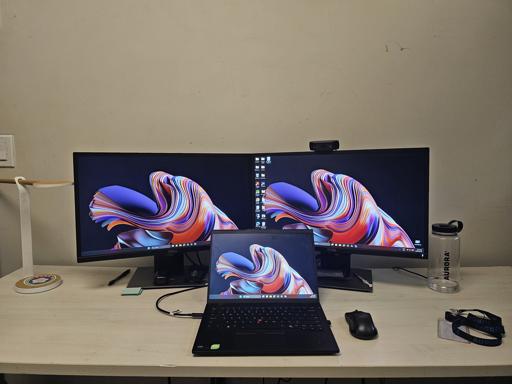
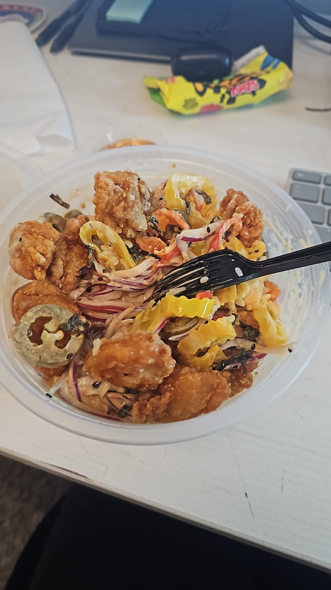
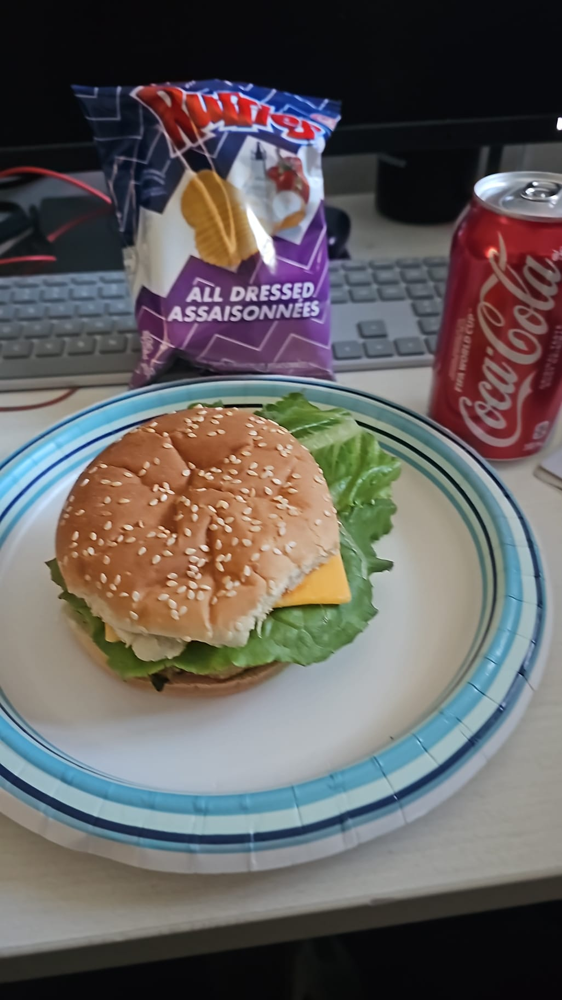
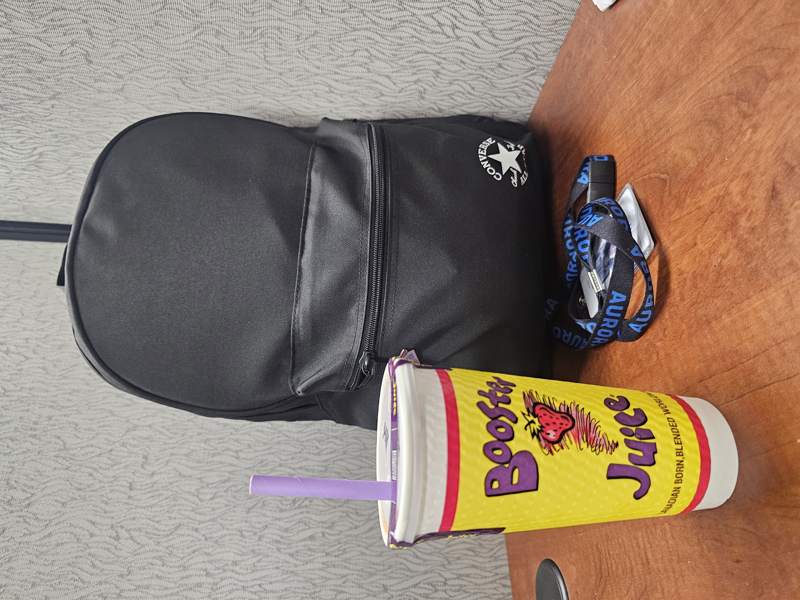

Introduction
This website summarizes my first work term experience as an IT service desk Co-op at Aurora Cannabis Inc. at the Brampton Distribution Center. My role focused on providing level 1 technical support for end users using the Service Now ticketing system, provisioning and configuring laptops using the Windows Autopilot process, and working with the Cybersecurity team to resolve various issues flagged by Bell Cyber. I'm also working on a project that involves disabling and clearing stale devices from Aurora's Active Directory and Service Now Assets.

Brampton Distribution Center
About Aurora Cannabis Inc.
Aurora Cannabis Inc. is a Canadian licensed cannabis producer, headquartered in Edmonton. As of September 2018, Aurora Cannabis had eight licensed production facilities, five sales licences, and operations in 25 countries. It had a funded capacity of over 625,000 kilograms of cannabis production per annum with the bulk of capacity based in Canada and a growing presence in international markets, particularly Denmark. The IT team at Aurora has various departments such as Service Desk, Infrastructure, Cybersecurity, Applications, Business Intelligence to name a few. As a co-op student within the Service Desk team, I had the opportunity to work and interact with almost all the IT departments which made this co-op experience eductional.

My desk in the IT Office
Most of the employee at the company are either remote or work on a hybrid schedule, but as a co-op student, I got the opportunity to work on-site with the other Aurora employees at the Brampton Distribution center.
Since most of the employee were remote, I'd use teams to reach out to users to help troubleshoot their issues or just to engage in casual discussions with other employees.
Every month, the site would organize various activites for us to stay engaged. From playing mini golf in the office to having BBQ's together, events like these brought the employees together and helped me get to know each of them better.



Other than the monthly on-site engagement activities, we'd also have the occasional treat of ordering in. I got to see Aurora celebrate making it to Times Canada's Best Companies 2026 list. To celebrate this, we ordered Booster Juice. Out of my many first's during this co-op term, one of them was having a poke bowl for the first time. I also had the opportunity to try Indo-Caribbean food for the first time as well.
Besides on-site activites, the IT team also helped us stay connected with people who worked remotely through monthly virtual events called "IT Social Club". From interactive Kahoot's to Chair Yoga, these events helped us stay connected and allowed us to take a break from work to have some fun.
Goals
Goal 1: Evergreen Project - Replacing 174 EOL Devices
As a part of the Evergreen project, we were looking to replace 174 End-of-life devices with newer ones. My main goal was to provision and setup 3 new laptops every week, which included working with the user to install any apps they'd require. I specifically wanted to learn how to use Windows Autopilot for device deployment because Autopilot provisioning is an industry standard I want to master for future Service desk or infrastructure roles. In the first month of the project, I was able to provision 1 device per week as I was still learning the Autopilot process. However, a month later, I was able to provision upto 5 devices each week. Along with the other IT team members we were able to Evergreen a significant number of devices. However, the Evergreen project has now been put on hold due to a lack of new devices.
Goal 2: Handling INC tickets and SCTASK tickets
My initial goal was to resolve 10 tickets (both SCTASK and INC tickets) per week. This would help me develop my technical troubleshooting skills by handling various tech issues while also being able to help keep our ticket queue clear, ensuring users receive proper help in a timely manner. Within 4 months, I was able to close approximately 450 INC tickets total. While most of these tickets were helping user troubleshoot their Tech issues, some of them were also Beginning of Service tickets which are submitted to help a user onboard or End of Service tickets which are submitted to help a user offboard. I was also able to close approximately 200 SCTASKS, which mostly consist of adding certain groups to a users membership, creating external guest accounts or creating shared mailboxes.My initial goal was 10 tickets (both SCTASK and INC tickets) per week, but after my first month, I was able to close nearly 25 tickets per week.
Goal 3: Completing the ConnectWise Automate course
I was assigned a course on ConnectWise Automate which would help me get a better understanding of our platform. ConnectWise Automate is a tool we use to monitor all Aurora devices. We can use it to remotely connect to devices to help troubleshoot issues, push scripts to install certain applications, monitor device health, see who's logged into a device, or even see what apps the device currently has. I was able to complete the full course during my work term. Doing so allowed me to better understand the tools this platform had to offer. This course on ConnectWise Automate will directly benefit my next co-op term experience by allowing me to jump right into advanced scripting and remote support tasks.
Goal 4: Learning about the various tools and services on ServiceNow
ServiceNow is a platform we use to manage our tickets and IT assets. As I became more familiar with the platform, I was able to confidently work on tickets and close them on time. One of the projects I worked on this term was to clear up all stale devices within our platforms like Active Directory, ServiceNow and Intune. ServiceNow was the best tool for me to utilize as I was able to access all of our IT assets through there. I was also able to learn how workflows are created within ServiceNow which provided a better understanding on how workflows can be created to ensure appropriate approvals are invoked for service requests.
Goal 5: Microsoft Autopilot process and understanding how it helps provisioning Aurora Cannabis Inc. devices
Autopilot is a tool created by Microsoft to help provision devices that fit company standard. My goal was to fully understand how Autopilot syncs to Intune and Active Directory to ensure devices were provisioned on time and accurately. Sometimes, devices tend to fail during the Autopilot process. Thus, understanding how Autopilot works and how to fix some of the common issues faced by Autopilot, I was able to resolve these issues quickly and ensured Aurora devices have been registered on our platforms, to ensure compliance standards are met.
Job description
As an IT Service Desk Co-op student, my role primarily focused on Service Desk operations while also gaining hands-on exposure to IT infrastructure and cloud services. I have to handle incoming tickets in our ServiceNow queue, assisting with provisioning and configuring laptops using Microsoft Intune and Autopilot, assigning licenses to users using security groups within AD, fixing hardware issues related to Laptops or PCS. I also had the opportunity to work on 2 projects, the Evergreen project and the Stale Devices cleanup project. For the Evergreen project, I had to collaborate with my fellow IT service desk team members to ensure all old Microsoft Surface books were replaced with the newer Lenovo Devices. The Stale Devices project was lead by me and the IT team lead, where we had to disable and move all devices that haven't been logged into for more than 180 days. Most of the skills required for me to succeed in this role had to be learnt on the job. While some skills like scripting or cloud management were taught at University, most of my troubleshooting skills had to be learnt by handling various tickets and learning along the way.
Conclusion
Overall, the first 4 months of my 8-month co-op term at Aurora Cannabis Inc. has provided a great opportunity for me to apply my theoretically IT knowledge to actual IT issues. As we progressed through the term, I was able to handle more complex tickets and tasks assigned by the IT team lead. I was able to simultaneously learn and provide my help to the service desk team by handling complex tickets, communicating with users and other teams within Aurora to ensure issues are resolved on time, and escalating an issues whenever required. I gained a much stronger understanding on how various tools like ServiceNow, Azure, Intune, and Active Directory are important to ensure IT Service Desk functions smoothly. Besides technical experience, Aurora provided the best environment for me to learn and grow as co-op student. Everyone was extremely friendly and welcoming, making me feel like I belonged at Aurora right from the start. This made my learning experience more fun and enjoyable.